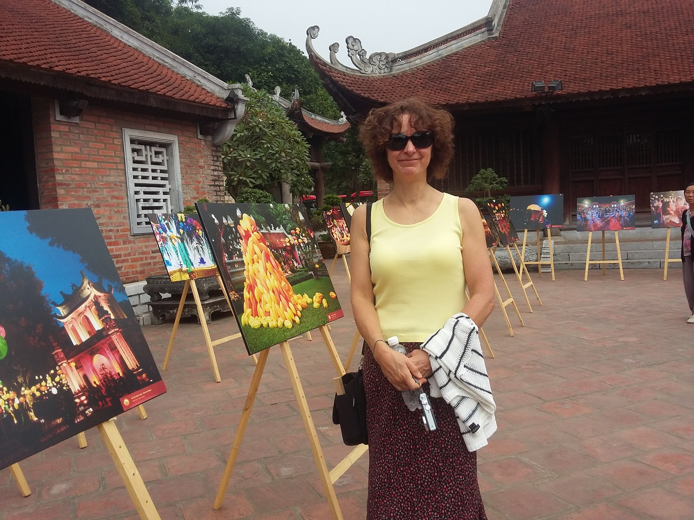

Không hẹn mà gặp, các sự kiện văn hóa ghi dấu ấn, bản sắc Việt Nam với bạn bè quốc tế dạo gần đây đều khai thác các giá trị truyền thống, tưởng đã "lỗi thời xưa cũ".
Chất Liệu Xưa Hút Hồn Du Khách
Những ngày cuối thu này, người dân đi qua tuyến phố Phùng Hưng (Hoàn Kiếm, Hà Nội) không khỏi trầm trồ với những bức tranh bích họa tái hiện ký ức đẹp về một Hà Nội xưa. Hình ảnh những chiếc xích lô, gánh hàng rong, bình cúc họa mi, chiếc nón lá qua nét vẽ mộc mạc, đơn sơ nhưng đẹp lạ kì.
Đây là những tác phẩm nằm trong dự án “Bích họa trên phố Phùng Hưng”, được xây dựng dựa trên dự án "Đưa nghệ thuật vào không gian sống" do các tổ chức Quốc tế phối hợp với UBND quận Hoàn Kiếm triển khai.
Đi quá lên vài tuyến phố, ghé vào sân Văn Miếu, du khách lại như lạc vào một khung cảnh lễ hội đậm chất Việt Nam.
Trong không gian cổ kính, trầm mặc của địa danh nổi tiếng Thủ đô, hơn 200 bức ảnh độc đáo với nội dung mô tả tích trò xưa, với bảng màu dân gian hiện lên lộng lẫy và sống động.
Các tác phẩm thuộc triển lãm ảnh Thu Vọng Nguyệt do chuỗi nhà hàng Quán Ăn Ngon lên ý tưởng và tổ chức tái hiện gần như nguyên vẹn sự kiện văn hóa cùng tên mà thương hiệu này mang đến dịp Trung thu.
Du khách Quốc tế có dịp được sống trong khung cảnh náo nhiệt, đậm hồn cốt Việt Nam với âm nhạc truyền thống được cách tân.
Họ say mê nhìn ngắm và hỏi han về những bức ảnh chụp lại khoảnh khắc ánh mắt trẻ thơ trong veo cùng tiếng cười rộn rã khi được cho mặt nạ giấy bồi, nghịch ngợm nặn tò he, tham gia các trò chơi dân gian như rước đèn ông sao, đèn kéo quân, ô ăn quan, nu na nu nống...
Đầu tháng 11/2017, trên sân khấu Asia’s Got Talent, nhóm nhảy 218 đã tạo hình áo dài, nón lá, bộ quần áo bà ba, người lái đò một cách đầy mới mẻ qua điệu nhảy Hiphop rộn rã với ánh đèn Led độc đáo trên giai điệu Trống cơm được hòa âm phối khí trẻ trung, hiện đại.

Hơn 200 bức ảnh độc đáo được trưng bày trong triển lãm ảnh Thu Vọng Nguyệt tại sân Thái Học - Văn Miếu Quốc Tử Giám đã thu hút đông đảo sự chú ý của các du khách nước ngoài trong ngày đầu diễn ra triển lãm 3/11 vừa qua.
Hình ảnh về một Văn Miếu Quốc Tử Giám trầm mặc cổ kính khoác lên mình "chiếc áo mới" đầy sức sống tựa như bản hòa tấu đa sắc màu hòa quyện giữa truyền thống và hiện đại đã khiến nhiều du khách cảm thấy bất ngờ và thích thú.